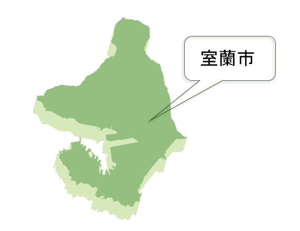
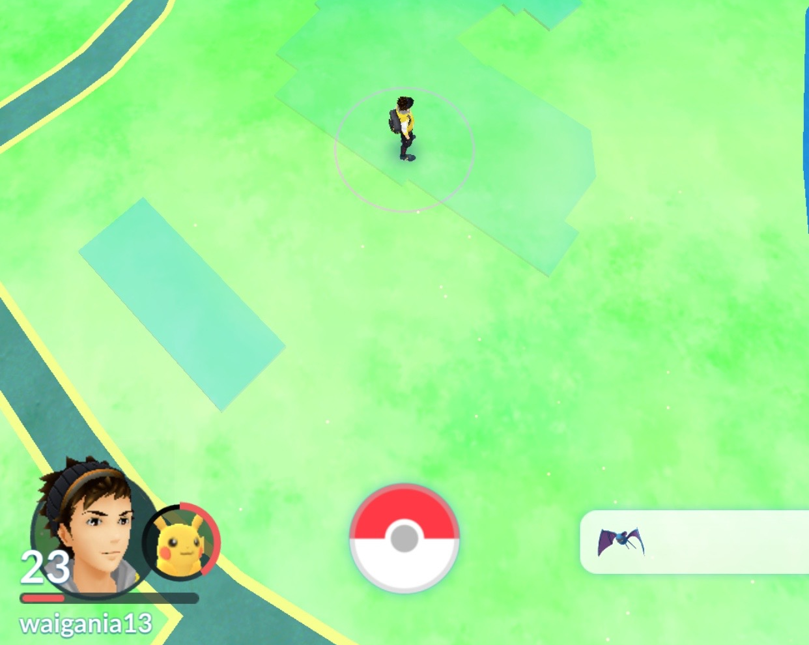
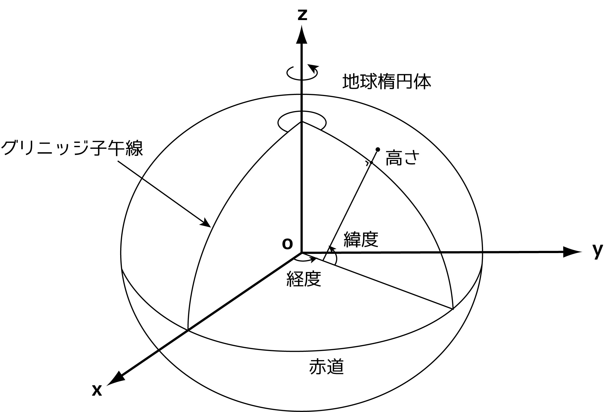
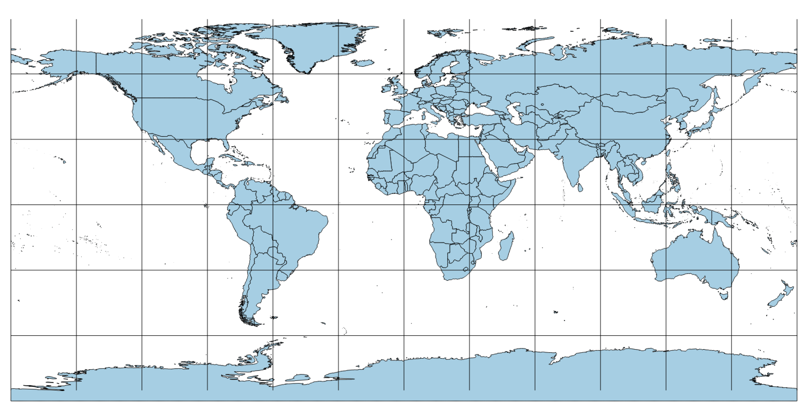
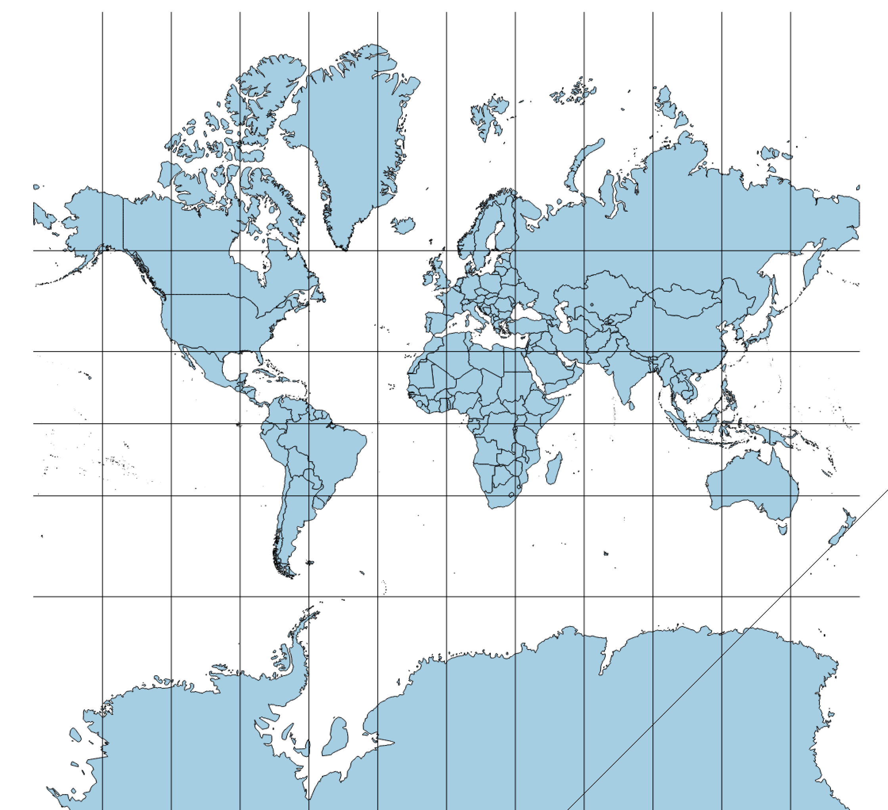
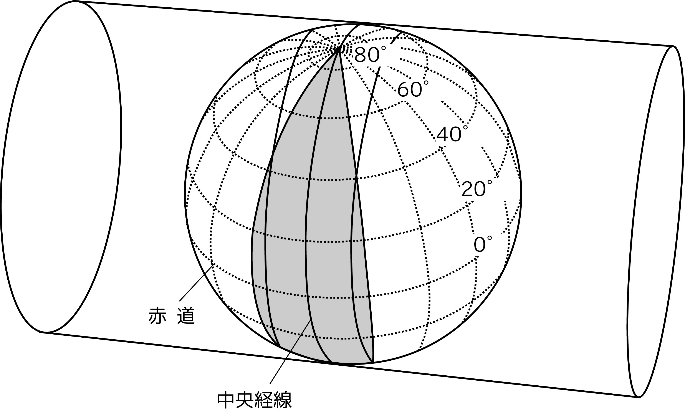
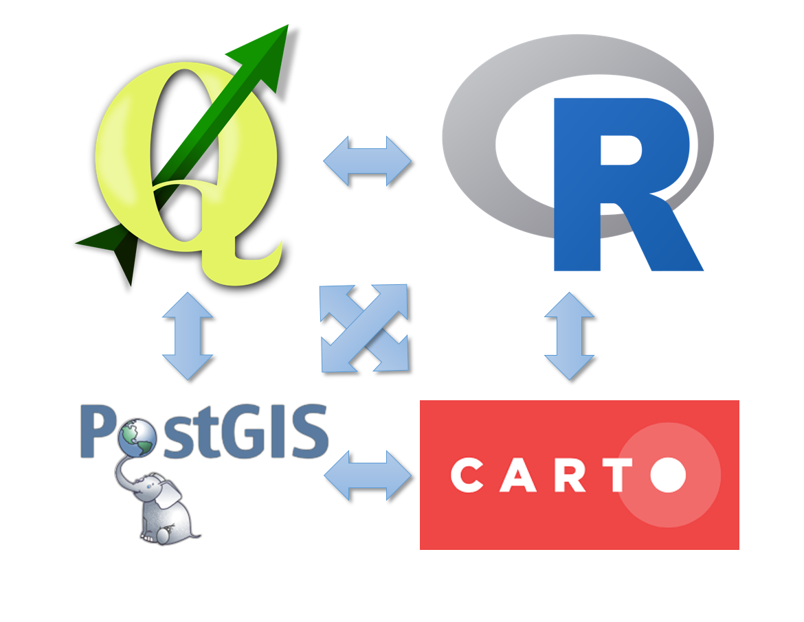

合同会社MIERUNE
朝日 孝輔
合同会社MIERUNE
(一社)社会基盤情報流通推進協議会
OSGeo財団日本支部 監事
IT・地理空間情報のコンサルタント
データの有効活用を通して課題の解決に貢献しています
位置の情報、もしくは位置+位置と結びついた情報 
大東京防犯ネットワーク
先週リニューアルオープンしたようなので見てみましょう
ユーザーの位置情報と、ポケストップ、ジム、ポケモンの出現位置を結びつけている(はず)

地球を近似した楕円体が同じならね 
いまどきはWGS84楕円体で同じだから大丈夫
古いのは気をつけよう
緯度経度で平面に書いてみた 
見慣れてるのはこれのはず
メルカトル図法、角度が正しい

何を正しく表すかを考慮して平面に投影
例えば円筒をかぶせて、接する一定範囲だけ採用

投影法の原点からの距離で座標を持たせる
地図を使ったアプリケーションを作成するためのプラットホーム
ユーザ登録してDATASETを作成します
手持ちのshapefile、csv、geojson、kmlなどがあればアップロードできます
位置情報を持っている必要はあります
もしくは空のDATASETを作成して、オブジェクトを追加して行きます
MAPVIEWでデータを地図上に展開できます
用意されている背景地図を選択できます
タイル地図ならURLを指定して背景に指定もできます
Map Layer Wizardで簡単にDATASETの表現付もできます
MAPをPUBLISHすると
地図をシェアするためのURL
サイトに組み込むためのコードが発行されます
まずは無料プランで試してみましょう
shapefileはzipにして、Drag&Dropで追加できます
PostgresSQLの空間拡張
CARTOで利用することができます
http://www.postgis.net/
小地域ポリゴンと統計表を結合
結合後、新しいDATASETを作成
select
h.cartodb_id,
h.key_code,
cast (replace(t.t000572001, '-', '0') as integer) as t_jinko,
h.the_geom_webmercator
from
h22ka01205 h, tblt000572c01205 t
where
t.key_code = cast(h.key_code as integer)
小地域ポリゴンと統計表を結合後、
行政コードの9桁を使ってマージ
select
st_union(the_geom_webmercator) as the_geom_webmercator,
sum(t_jinko) as t_jinko,
substr(key_code, 1, 9) as key_code
from
h22ka01205_copy
group by substr(key_code, 1, 9)
select
st_buffer(the_geom_webmercator, 500) as the_geom_webmercator
from
aed_20160616
select
h.* from hinanbasyo h
where not exists (
select h.*
from aed_20160616 a
where
st_within( h.the_geom_webmercator, st_buffer(a.the_geom_webmercator, 500))
)

FOSS4G Tokyo 2016
11/5(土)10:00-
東京大学駒場リサーチキャンパス
（生産技術研究所内）An棟2階